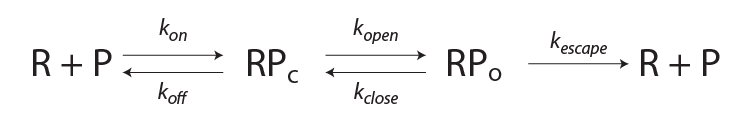

This calculator determines mRNA flux as a function of one of the rate constants (1/s) or polymerase concentration ([R], nM).
This may be useful for judging the relative importance of individual rate constants given a particular mechanism. After parameters for
a promoter of interest are entered in the boxes below, the buttons may be pushed to perform a titration of an individual parameter. The
range of the titration of that particular parameter and the resolution of the titration are entered to the right. A plot will appear to the right displaying the titration
using the y-axis scale selected from the dropdown menu and the titrated rate will be highlighted in the schematic below. The resulting data can be downloaded in semi-colon separated format.
